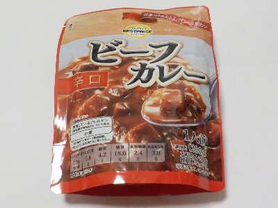

三重県桑名市陽だまりの丘6-103
更新日 : 2026/02/07

イオン系列のレトルトカレーです。
税込み108円で安いんですがビーフカレーです。内容量も200gあり多く、お得感があったので購入しました。
辛口のカレーが量多めなので、刺激が強いかと思ったんですが普通に食べれました。次買うときも辛口を買おうと思いました。
特別印象に残ることはなかったですが、悪くはないで料理が面倒な時や忙しい時にサクッと買って食べるのに丁度いいと思いました。
【おいしいものを食べよう。】【たくさん寝よう。】
【ソロ活をしよう!】【季節感のあることをしよう。】【動画視聴はほどほどに。】【当サイトの全てのコンテンツは無断転載禁止です。】